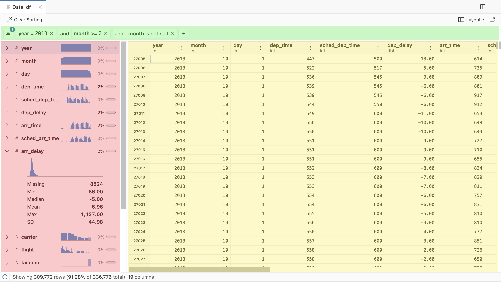

--- config: look: handDrawn --- flowchart LR id[****FINANCIAL MODELING****] classDef bluedrawn fill:#c0e5fe,stroke:#612200,color:#000000; class id bluedrawn;
Hi, I’m Javier
Career & Skills Progression
--- config: look: handDrawn --- flowchart LR id2[****DATA SCIENCE****] classDef peachdrawn fill:#ffddd6,stroke:#612200,color:#000000; class id2 peachdrawn;
---
config:
look: handDrawn
---
flowchart LR
A[EY] --> B[PG&E]
B --> C[KPMG]
C --> D{UCI's<br>MSBA<br>Program}
D --> E[Centene]
E --> F[Bloomreach]
F --> G[Centene]
classDef whitedrawn fill:#ffffff,stroke:#612200,color:#000000;
class A,B,C,D,E,F,G whitedrawn;
Personal Site: JavierOrracaDeatcu.com | LinkedIn: linkedin.com/in/orraca
Career & Skills Progression
--- config: look: handDrawn --- flowchart LR id[**FINANCIAL MODELING**] classDef bluedrawn fill:#c0e5fe,stroke:#612200,color:#000000; class id bluedrawn;
--- config: look: handDrawn --- flowchart LR id2[**DATA SCIENCE**] classDef peachdrawn fill:#ffddd6,stroke:#612200,color:#000000; class id2 peachdrawn;
---
config:
look: handDrawn
---
flowchart LR
A[EY] --> B[PG&E]
B --> C[KPMG]
C --> D{UCI's<br>MSBA<br>Program}
D --> E[Centene]
E --> F[Bloomreach]
F --> G[Centene]
classDef bluedrawn fill:#c0e5fe,stroke:#612200,color:#000000;
classDef whitedrawn fill:#ffffff,stroke:#612200,color:#000000;
class A,B,C bluedrawn;
class D,E,F,G whitedrawn;
Personal Site: JavierOrracaDeatcu.com | LinkedIn: linkedin.com/in/orraca
Career & Skills Progression
--- config: look: handDrawn --- flowchart LR id[**FINANCIAL MODELING**] classDef bluedrawn fill:#c0e5fe,stroke:#612200,color:#000000; class id bluedrawn;
--- config: look: handDrawn --- flowchart LR id2[**DATA SCIENCE**] classDef peachdrawn fill:#ffddd6,stroke:#612200,color:#000000; class id2 peachdrawn;
---
config:
look: handDrawn
---
flowchart LR
A[EY] --> B[PG&E]
B --> C[KPMG]
C --> D{UCI's<br>MSBA<br>Program}
D --> E[Centene]
E --> F[Bloomreach]
F --> G[Centene]
classDef bluedrawn fill:#c0e5fe,stroke:#612200,color:#000000;
classDef peachdrawn fill:#ffddd6,stroke:#612200,color:#000000;
classDef whitedrawn fill:#ffffff,stroke:#612200,color:#000000;
class A,B,C bluedrawn;
class D whitedrawn;
class E,F,G peachdrawn;
Personal Site: JavierOrracaDeatcu.com | LinkedIn: linkedin.com/in/orraca
Career & Skills Progression
--- config: look: handDrawn --- flowchart LR id[**FINANCIAL MODELING**] classDef bluedrawn fill:#c0e5fe,stroke:#612200,color:#000000; class id bluedrawn;
--- config: look: handDrawn --- flowchart LR id2[**DATA SCIENCE**] classDef peachdrawn fill:#ffddd6,stroke:#612200,color:#000000; class id2 peachdrawn;
---
config:
look: handDrawn
---
flowchart LR
A[EY] --> B[PG&E]
B --> C[KPMG]
C --> D{UCI's<br>MSBA<br>Program}
D --> E[Centene]
E --> F[Bloomreach]
F --> G[Centene]
classDef bluedrawn fill:#c0e5fe,stroke:#612200,color:#000000;
classDef peachdrawn fill:#ffddd6,stroke:#612200,color:#000000;
classDef whitedrawn fill:#ffffff,stroke:#612200,color:#000000;
class A,B,C bluedrawn;
class D whitedrawn;
class E,F,G peachdrawn;
---
config:
look: handDrawn
---
flowchart LR
A[Excel, PowerPoint, Access, SQL] --> B{UCI's<br>MSBA<br>Program}
B --> C[Automating Manual Excel Work]
C --> D[Developing R Packages & Web Apps]
B --> E[Code-based Analytics]
E --> F[Machine Learning & AI]
F --> G[R, Linux, git, Posit tools, Databricks]
classDef bluedrawn fill:#c0e5fe,stroke:#612200,color:#000000;
classDef peachdrawn fill:#ffddd6,stroke:#612200,color:#000000;
classDef whitedrawn fill:#ffffff,stroke:#612200,color:#000000;
class A,C bluedrawn;
class D,E,F,G peachdrawn;
class B whitedrawn;
Personal Site: JavierOrracaDeatcu.com | LinkedIn: linkedin.com/in/orraca
Standing Out with Shiny
Shiny is a code-based web app framework for Python and R
Easy-ish-ly build web apps with no formal web dev experience
Use reactive programming that allows for dynamic, real-time updates to the app based on user input
Extend your Shiny apps with HTML widgets, real-time data polling, JavaScript, CSS, and more
Learn more about Shiny for Python and Shiny for R
Shiny Demo as a Resume Accessory
Most corporate dashboards feel clunky…
They’re laggy, very boxy, e.g., Power BI, Tableau, MicroStrategy
Dashboards typically struggle with fast, real-time calculations, search, and data manipulation capabilities
For hiring teams, you can use Shiny as a resume accessory to demonstrate how easy it is to develop and deploy a web app styled with the company’s brand aesthetics
Check out my blog post: Impressing Hiring Teams with a Shiny App Demo (2023-03-28)
Shiny Demo as a Resume Accessory
Bloomreach’s website:
Check out my blog post: Impressing Hiring Teams with a Shiny App Demo (2023-03-28)
Shiny Demo as a Resume Accessory
Javier’s Shiny demo:

Launch this live Shiny app demo: https://javierorraca.shinyapps.io/Bloomreach_Shiny_App
Pro Tip! üí° Shiny Assistant
- The new Shiny Assistant‚Ķ ü§Ø‚Ķ An LLM-powered tool that builds functional Python and R Shiny apps in minutes!
- Shiny Assistant builds apps using Shinylive, a web interface made possible by WebAssembly (or “wasm”)
- The LLM’s training data is a few months old as of this writing so it won’t know about the latest Shiny features
Posit’s Shiny Assistant blog post | Try the Shiny Assistant for yourself!
My Professional Data Science Workflow

R for Data Science, 2nd Edition by Wickham, Çetinkaya-Rundel, & Grolemund | https://r4ds.hadley.nz
My Professional Data Science Toolkit
Learn more about the open-source RStudio IDE | https://posit.co/products/open-source/rstudio
My Professional Data Science Toolkit

RStudio User Guide | https://docs.posit.co/ide/user/ide/get-started
My Professional Data Science Toolkit

Learn about Posit Professional Products & Solutions | Deploy your content on Posit’s beta Connect Cloud!
Typical Python Tools for Data Science

Learn about Microsoft’s Virtual Studio Code (“VS Code”) User Interface | https://code.visualstudio.com/docs/getstarted/userinterface
Typical Python Tools for Data Science
Image: © Ander Fernández Jauregui | Learn about Project Jupyter’s Jupyter Notebook
In Review
RStudio IDE’s “always on” panes welcomed R users seeking a data-analysis-first experience
For Python users, RStudio felt too R-centric and other tools worked just fine including VS Code, Jupyter Notebooks, PyCharm, etc.
There are many programming languages that can be used for data analysis, but Python and R are the de facto standards for data science
So, why isn’t there
one tool
to rule them all!?
Me, using RStudio while my teammates use VS Code…
Introducing: Positron™
Positron, it looks familiar!

Visit the new Positron website to learn more | https://positron.posit.co/
About Positron
- What is Positron? From Posit’s getting started docs:
- A next-generation data science IDE built by Posit PBC
- An extensible, polyglot tool for writing code and exploring data
- A familiar environment for reproducible authoring and publishing
- Positron is a tailor-made IDE for data science built on top of Code OSS that can be used with any combination of programming languages
Visit the new Positron website to learn more | https://positron.posit.co/
VS Code OSS w/ RStudio panes!

Layout by Dr. Athanasia Mo Mowinckel | Positron IDE - A new IDE for data science
Prerequisites
- Windows prereqs:
- Ensure the latest Visual C++ Redistributable is installed
- If you’re an R user package developer, note that Positron doesn’t currently bundle
Rtools. - For reference,
RToolscontains the required compilers needed to build R packages from source code on Windows
- Ensure the latest Visual C++ Redistributable is installed
Getting Started with Positron | Machine Prerequisites
Prerequisites
- Python prereqs:
- The Posit team recommends pyenv to manage Python versions, and Python versions from 3.8 to 3.12 are actively supported on Positron
- For Linux users, install the SQLite system libraries (
sqlite-develorlibsqlite3-dev) ahead of time sopyenvcan build your Python version(s) of choice - Positron communicates with Python via the
ipykernel - If you’re using
venvorcondato manage your Python projects, you can installipykernalmanually as follows:python3 -m pip install ipykernel
- The Posit team recommends pyenv to manage Python versions, and Python versions from 3.8 to 3.12 are actively supported on Positron
Getting Started with Positron | Machine Prerequisites
Prerequisites
- R prereqs:
- Positron requires R 4.2 or higher - To install R, follow the instructions for your OS at https://cloud.r-project.org
- If you’d like to have multiple R installations, rig is a great tool that works on macOS, Windows and Linux, and works well with Positron
- Positron requires R 4.2 or higher - To install R, follow the instructions for your OS at https://cloud.r-project.org
Getting Started with Positron | Machine Prerequisites
Interpreter Selector
- When Positron starts for the first time in a new workspace (or project directory), it will start Python and/or R depending on your workspace characteristics
- In subsequent runs, Positron will start the same interpreter(s) that was running the last time that you used that workspace
- You can start, stop, and switch interpreters from the interpreter selector
Getting Started with Positron | Interpreter Selection
Key Bindings & Command Palette
- Key bindings trigger actions by pressing a combination of keys
- The key binding Cmd/Ctrl+Shift+P will bring up Positron’s Command Palette
- This lets you search and execute actions without needing to remember the key binding
Learn more on Emil Hvitfeldt’s blog post Positron: My Key Bindings
Global Keyboard Shortcuts
| Shortcut | Description |
|---|---|
| Cmd/Ctrl+Enter | Run the selected code in the editor; if no code is selected, run the current statement |
| Cmd/Ctrl+Shift+0 | Restart the interpreter currently open in the Console |
| Cmd/Ctrl+Shift+Enter | Run the file open in the editor (using e.g. source() or %run) |
| F1 | Show contextual help for the topic under the cursor |
| Cmd/Ctrl+K, Cmd/Ctrl+R | Show contextual help for the topic under the cursor (alternate binding) |
| Cmd/Ctrl+K, F | Focus the Console |
| Ctrl+L | Clear the Console |
Positron docs | Keyboard Shortcuts
R Keyboard Shortcuts
| Shortcut | Description |
|---|---|
| Cmd/Ctrl+Shift+M | Insert the pipe operator (|> or %>%) |
| Alt+- | Insert the assignment operator (<-) |
| Cmd/Ctrl+Shift+L | Load the current R package, if any |
| Cmd/Ctrl+Shift+B | Build and install the current R package, if any |
| Cmd/Ctrl+Shift+T | Test the current R package, if any |
| Cmd/Ctrl+Shift+E | Check the current R package, if any |
| Cmd/Ctrl+Shift+D | Document the current R package, if any |
Positron docs | Keyboard Shortcuts
RStudio Keymap
If you’re an experienced RStudio user, you can easily set the RStudio keybindings in the Positron settings:
- Open Positron’s settings in the UI or the keystroke Cmd/Ctrl+,
- Search for “keymap”, or navigate to Extensions > RStudio Keymap
- Check the “Enable RStudio key mappings for Positron” checkbox
Positron docs | Keyboard Shortcuts
Data Explorer Overview
- The new Data Explorer allows for interactive exploration of various types of dataframes using Python (
pandas,polars) or R (data.frame,tibble,data.table,polars) - The Data Explorer has three primary components
- Data grid: Spreadsheet-like display of the data with sorting
- Summary panel: Column name, type and missing data percentage for each column
- Filter bar: Ephemeral filters for specific columns
Positron docs | Data Explorer
Data Explorer Overview
- To use, navigate to the Variables Pane and click on the Data Explorer icon:
Positron docs | Data Explorer
Data Explorer Overview

Positron docs | Data Explorer
Data Explorer’s Data Grid
- The data grid is the primary display and scales efficiently with large in-memory datasets up to millions of rows or columns
- At the top right of each column, there is a context menu that controls sorting and filtering in the selected column
Positron docs | Data Explorer
Data Explorer’s Summary Panel
- Displays a vertical scrolling list of all columns in the data
- It displays a sparkline histogram of that column’s data, displays the amount of missing data, and shows some summary statistics about that column
- Double clicking on a column name will bring the column into focus in the data grid
Positron docs | Data Explorer
Data Explorer’s Filter Bar
- The filter bar has controls to add filters, show/hide existing filters, or clear filters
- Clicking the + button quickly adds a new filter
- The status bar at the bottom of the Data Explorer also displays the percentage and number of remaining rows relative to the original total after applying a filter
Positron docs | Data Explorer
Connections Pane
- Explore database connections established with ODBC drivers or packages
- For Python users, the sqlite3 and SQLAlchemy packages are supported
- For R users, the odbc, sparklyr, bigrquery, and more packages are supported
Positron docs | Connections Pane
Interactive Apps
- Instead of running apps from a Terminal, Positron lets you run supported apps by clicking the Play button in Editor Actions
- Supported apps include the following: Shiny, Dash, FastAPI, Flask, Gradio, and Streamlit
- You can also start apps in Debug mode
Positron docs | Run Interactive Apps
Learn More about Positron
Visit Posit’s new Positron website and their YouTube channel to learn more
Special Bonus for R Users üòò
- Ark (“an R kernel”) was created to serve as the interface between R and the Positron IDE and is a Jupyter kernel, a Language Server Protocol (“LSP”) server, and it is a Debug Adapter Protocol (“DAP”)
- It is compatible with all frontends implementing the Jupyter protocol and is bundled with Positron
- Ark’s LSP was written with a Rust backend to future proof its ability to perform sophisticated static analysis of R code and its DAP allows for advanced step-debugging
Learn more about Ark on the Ark GitHub repo
So, lesson learned…
Positron = Amazing.
But next…
let’s talk about
ULTRA
FAST
ETL üí®
Arrow, DuckDB, and Polars
About these Frameworks
- Apache Arrow: An in-memory columnar format that lets data move quickly between systems and languages (like Python and R) and speeds up analytical tasks
- DuckDB: An in-process SQL database management system focused on analytical query processing
- Polars: A modern DataFrame library with a multi-threaded query engine written in Rust that uses the Apache Arrow memory model under the hood
- Apache Parquet: A popular columnar storage format that compresses data to save space and is easily read by Arrow, DuckDB, and Polars for efficient data querying
Learn more about Apache Arrow, DuckDB, Polars, and Apache Parquet
Benefits & Use Cases
- These frameworks provide convenient methods for reading and writing columnar file formats
- If you’re working with a collection of
.parquetfiles, the Arrow packages for C++, Python, and R support reading entire directories of files and treating them as a single dataset - Allows zero-copy data sharing inside a single process without any build-time or link-time dependency requirements. This allows, for example, R users to access Python
pyarrow-based projects using R’sreticulatepackage. - Apache Spark uses Arrow as a data interchange format, and both Python’s
PySparkand R’ssparklyrtake advantage of Arrow for significant performance gains when transferring data
Learn more about Apache Arrow, DuckDB, Polars, and Apache Parquet
Installing Arrow, DuckDB, and Polars
Python
R
# Arrow env vars for AWS S3 & GCP support
Sys.setenv(LIBARROW_MINIMAL = "false")
Sys.setenv(ARROW_S3 = "ON")
Sys.setenv(ARROW_GCS = "ON")
# Enable Polars install with pre-built
# Rust library binary
Sys.setenv(NOT_CRAN = "true")
# Install packages
install.packages(c("arrow", "duckdb"))
install.packages("polars", repos = "https://community.r-multiverse.org")
install.packages("polarssql", repos = "https://rpolars.r-universe.dev")Back to fast… How fast?
- My personal laptop is a MacBook Air with 24 GB RAM
- To test Arrow’s capabilities, I read a 40 GB dataset with more than 1.1 billion rows and 24 columns
- The
.parquetdataset was partitioned by Year and Month (120 files) - Important to note that my laptop would not be able to load this object entirely into memory as a data.frame or tibble given my laptop’s limited RAM
Arrow | Learn more at https://arrow.apache.org/
Reading Remote Parquet Data
Python
import pyarrow.dataset as ds
import pyarrow.compute as pc
import os
# Set path for download
# NYC Taxi Data download (40 GB)
data_path = os.path.join("data", "nyc-taxi")
# Open connection to the remote dataset
nyc_dataset = ds.dataset(
"s3://voltrondata-labs-datasets/nyc-taxi",
format = "parquet"
)
# Filter for years 2012 - 2021
filtered_table = nyc_dataset.to_table(
filter = ds.field("year").isin(list(range(2012, 2022)))
)
# Write out the filtered data, partitioned by year and month
ds.write_dataset(
filtered_table,
base_dir = data_path,
format = "parquet",
partitioning = ["year", "month"]
)R
library(here)
library(arrow)
library(dplyr)
# Set path for download
# NYC Taxi Data download (40 GB)
data_path <- here::here("data/nyc-taxi")
# Open connection to the remote dataset,
# filter for years 2012 - 2021, and
# write out the filtered data,
# partitioned by year and month
open_dataset("s3://voltrondata-labs-datasets/nyc-taxi") |>
filter(year %in% 2012:2021) |>
write_dataset(data_path, partitioning = c("year", "month"))Arrow | Learn more at https://arrow.apache.org/
Benchmarking Read Times
R
Arrow | Learn more at https://arrow.apache.org/
Benchmarking Read Times
- Once “locally” available, the 40GB, 1.1 billion row dataset (benchmarked 1,000 times) can be read on average in 17ms
Arrow | Learn more at https://arrow.apache.org/
Benchmarking Data Manipulation
- Using R’s
dplyr, we can perform ETL on anarrowtable andcollect()the results back to a df
# Open Arrow connection to dataset (40 GB)
nyc_taxi <- open_dataset(here::here("data/nyc-taxi"))
# Benchmark dplyr pipeline
bnch <- bench::mark(
min_iterations = 100,
arrow = nyc_taxi |>
filter(payment_type %in% c("Credit card", "Cash")) |>
group_by(payment_type) |>
summarise(mean_fare = mean(fare_amount, na.rm = T),
mean_tip = mean(tip_amount, na.rm = T)) |>
ungroup() |>
dplyr::collect()
)
autoplot(bnch)Arrow | Arrow + dplyr compatibility
Benchmarking ETL
- The results show the ETL pipeline on average summarized 1.1 billion rows in 9.5s, benchmarked over 100 iterations
Arrow | Arrow + dplyr compatibility
Note for R’s Tidyverse Users
- Many functions from the tidyverse collections of packages have 1:1 compatibility with Arrow tables
- However, sometimes you’ll encounter a breaking point
- Take this
stringr::str_replace_na()example:
- Out of the box, Arrow does not support
stringr::str_replace_na()
Arrow | Arrow + dplyr compatibility
Me, struggling to use my favorite tidyverse functions with Arrow…
but wait!
a solution exists
User Defined Functions
- Arrow allows users to create and register User Defined Functions (or “UDFs”) to the Arrow engine
- Almost any function can be made Arrow-friendly by registering custom UDFs to the Arrow kernel
- Let’s learn how to register
stringr::str_replace_na()with the Arrow kernel
Arrow | Learn more about registering Arrow User Defined Functions (“UDFs”)
Registering UDFs
- First, run
arrow::schema()on your Arrow table to review the field name and data type pairs
- Since I want to mutate the
vendor_namefield, I know I’ll be working with an Arrowstring()data type
Arrow | Learn more about registering Arrow User Defined Functions (“UDFs”)
Registering UDFs
- Next, we’ll use
arrow::register_scalar_function() - Name your UDF
replace_arrow_nas - If you’re registering a tidyverse function, set
auto_convert = TRUE
Arrow | Learn more about registering Arrow User Defined Functions (“UDFs”)
Trying the UDF
- Let’s see if the registered
replace_arrow_nas()Arrow UDF works…
Arrow | Learn more about registering Arrow User Defined Functions (“UDFs”)
Trying the UDF
- Let’s see if the registered
replace_arrow_nas()Arrow UDF works…
- Success! It works!
Arrow | Learn more about registering Arrow User Defined Functions (“UDFs”)
Eevee can’t believe it… “Wooooooooooow, Javi!”
DuckDB
- DuckDB Labs created an in-line database management system, like a SQLite database engine, but optimized for distributed compute and optimized for larger-than-memory analysis
- The duckdb package for Python offers a state-of-the-art optimizer that pushes down filters and projections directly into Arrow scans
- As a result, only relevant columns and partitions will be read thus significantly accelerates query execution
- DuckDB comes with core and community extensions that expand the framework to, e.g., scan remote Databricks Unity Catalog tables without needing to spin up a Spark cluster
DuckDB Labs | Learn about DuckDB and DuckDB Extensions
DuckDB Usage Basics
Python
import duckdb
# Connect to an in-memory DuckDB instance and scan
# the Parquet data set to make a temp View
con = duckdb.connect()
con.execute("""
CREATE VIEW nyc_taxi AS
SELECT * FROM read_parquet('data/nyc-taxi/**/*.parquet', hive_partitioning=true)
""")
# Run your SQL query
df = con.execute("""
SELECT
payment_type,
AVG(fare_amount) AS mean_fare,
AVG(tip_amount) AS mean_tip
FROM nyc_taxi
WHERE payment_type IN ('Credit card', 'Cash')
GROUP BY payment_type
""").df()
print(df)R
library(duckdb)
# Connect to an in-memory DuckDB instance and scan
# the Parquet data set to make a temp View
con <- dbConnect(duckdb())
dbExecute(con, "
CREATE VIEW nyc_taxi AS
SELECT * FROM read_parquet('data/nyc-taxi/**/*.parquet', hive_partitioning = true)"
)
# Run your SQL query
df <- dbGetQuery(con, "
SELECT
payment_type,
AVG(fare_amount) AS mean_fare,
AVG(tip_amount) AS mean_tip
FROM nyc_taxi
WHERE payment_type IN ('Credit card', 'Cash')
GROUP BY payment_type
")
print(df)DuckDB Labs | Learn how DuckDB quacks Arrow
DuckDB Streaming with Python
# DuckDB via Python
# Open dataset using year,month folder partition
nyc = ds.dataset('nyc-taxi/', partitioning=["year", "month"])
# Get database connection
con = duckdb.connect()
# Run query that selects part of the data
query = con.execute("SELECT total_amount, passenger_count,year FROM nyc where total_amount > 100 and year > 2014")
# Create Record Batch Reader from Query Result.
# "fetch_record_batch()" also accepts an extra parameter related to the desired produced chunk size.
record_batch_reader = query.fetch_record_batch()
# Retrieve all batch chunks
chunk = record_batch_reader.read_next_batch()
while len(chunk) > 0:
chunk = record_batch_reader.read_next_batch()# We must exclude one of the columns of the NYC dataset due to an unimplemented cast in Arrow
working_columns = ["vendor_id","pickup_at","dropoff_at","passenger_count","trip_distance","pickup_longitude",
"pickup_latitude","store_and_fwd_flag","dropoff_longitude","dropoff_latitude","payment_type",
"fare_amount","extra","mta_tax","tip_amount","tolls_amount","total_amount","year", "month"]
# Open dataset using year,month folder partition
nyc_dataset = ds.dataset(dir, partitioning=["year", "month"])
# Generate a scanner to skip problematic column
dataset_scanner = nyc_dataset.scanner(columns=working_columns)
# Materialize dataset to an Arrow Table
nyc_table = dataset_scanner.to_table()
# Generate Dataframe from Arow Table
nyc_df = nyc_table.to_pandas()
# Apply Filter
filtered_df = nyc_df[
(nyc_df.total_amount > 100) &
(nyc_df.year >2014)]
# Apply Projection
res = filtered_df[["total_amount", "passenger_count","year"]]
# Transform Result back to an Arrow Table
new_table = pa.Table.from_pandas(res)DuckDB Labs | Learn how DuckDB quacks Arrow
DuckDB Streaming Speed Bump
- The Python
pandasruntime was 146.91 seconds
- Python’s
duckdbruntime was 0.05 seconds
- Data manipulation processing time was 2,900x faster with
duckdbvspandas

DuckDB Labs | Learn how DuckDB quacks Arrow
For R users: duckplyr
duckplyr, from DuckDB Labs, offers 1:1 compatibility withdplyrfunctions but there are some caveats:- Factor columns, nested lists, and nested tibbles are not yet supported
- To group data, use
dplyr’ssummarize()function with the.byargument asgroup_by()is not be supported
duckplyr | Learn more at https://duckdblabs.com/
Polars
polars | Learn more at https://pola.rs/
Polars
- While Arrow is primarily a memory format and data transfer standard, Polars is specifically designed for data analysis with lazy evaluation, DataFrame manipulations, and a consistent API across languages
- DuckDB is a full database system that excels at SQL queries and can integrate with both Arrow and Polars, but Polars focuses on in-memory processing and programmatic data manipulation
polars | Learn more at https://pola.rs/
Benchmarking Analysis
- Arrow and DuckDB really stood out for fast manipulation of data using
dplyrsyntax - The SQL below shows the basic transformation done to the data using
dplyr,arrow,duckdb,duckplyr, andpolars
DuckDB Labs | Learn more at https://duckdblabs.com/
Benchmark: 1 million rows
DuckDB Labs | Learn more at https://duckdblabs.com/
Benchmark: 10 million rows
DuckDB Labs | Learn more at https://duckdblabs.com/
Benchmark: 100 million rows
DuckDB Labs | Learn more at https://duckdblabs.com/
Benchmark: 500 million rows

DuckDB Labs | Learn more at https://duckdblabs.com/
Benchmark: 1.1 billion rows
DuckDB Labs | Learn more at https://duckdblabs.com/
Quarto
Just to clarify…
It’s Quarto.
Q-U-A-R-T-O.
Not #4 in Spanish (or “cuatro”).
Quarto Presentations
- These web slides were built with Quarto!
- Quarto is an open-source scientific and technical publishing system that can be used with Python, R, Julia, and Observable JS
- Similar to Jupyter Notebook
.ipynbfiles (and in many ways, the successor to R Markdown.Rmd), Quarto lets you develop static and interactive reproducible, production quality content including articles, presentations, dashboards, websites, blogs, and books in HTML, PDF, MS Word, ePub, and more - In addition to custom styling with
.cssor.scss, the new_brand.ymlfile can be used with your Quarto and Shiny projects to provide a unifying and portable branding framework
Learn more about Quarto and brand.yml | Posit blog post: Unified branding across Posit tools with brand.yml
Quarto Presentations
The following sections were copied almost entirely from Quarto’s Reveal.js demo documentation
The next few slides cover what you can do with Quarto and Reveal.js including:
- Presenting code and LaTeX equations
- Rendering code chunk computations in slide output
- Fancy transitions, animations, and code windows
Quarto | Learn more on Quarto’s Reveal.js demo presentation
Pretty Code
- Over 20 syntax highlighting themes available
- Default theme optimized for accessibility
# Define a server for the Shiny app
function(input, output) {
# Fill in the spot we created for a plot
output$phonePlot <- renderPlot({
# Render a barplot
})
}Quarto | Syntax Highlighting
Code Animations
- Over 20 syntax highlighting themes available
- Default theme optimized for accessibility
# Define a server for the Shiny app
function(input, output) {
# Fill in the spot we created for a plot
output$phonePlot <- renderPlot({
# Render a barplot
barplot(WorldPhones[,input$region]*1000,
main=input$region,
ylab="Number of Telephones",
xlab="Year")
})
}Quarto | Code Animations
Line Highlighting
- Highlight specific lines for emphasis
- Incrementally highlight additional lines
import numpy as np
import matplotlib.pyplot as plt
r = np.arange(0, 2, 0.01)
theta = 2 * np.pi * r
fig, ax = plt.subplots(subplot_kw={'projection': 'polar'})
ax.plot(theta, r)
ax.set_rticks([0.5, 1, 1.5, 2])
ax.grid(True)
plt.show()Quarto | Line Highlighting
LaTeX Equations
To include a LaTeX equation in Quarto, you would use the double dollar sign delimiters ($$) for a display equation on a separate line, like this:
$$x = \frac{-b \pm \sqrt{(b^2 - 4ac)}}{2a}$$
\[x = \frac{-b \pm \sqrt{(b^2 - 4ac)}}{2a}\]
Quarto | LaTeX Equations
Counters
Great for training purposes or when you’ve got a time limit
00:10
Quarto | Learn more about the countdown package
Thank you! ü§ç
questions?
Connect with me!
- Personal Site: JavierOrracaDeatcu.com
- LinkedIn: linkedin.com/in/orraca